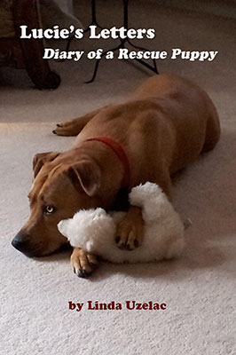

Welcome to Stage Door Musicals
We offer family-oriented musical plays! Legends and myths, fantasy and fiction, beloved fairy tales, and Biblical stories.
With appeal for audiences young and old, they are perfect for all theaters and drama groups.
Be sure to book early in the season to insure availability. Contact us now to request perusals!
For licensing information, please contact us by filling out the web form,
or by calling Linda Uzelac at (770) 410-0403
Other professional services available:
- Musical Direction
- Piano Accompaniment
- Vocal & Audition Coaching
- Recording Services
- Notation Services
- Composer
Lucie's Letters: Diary of a Rescue Puppy
Lucie's Letters: Diary of a Rescue Puppy is the first in a trilogy of books that showcase the humorous and touching innermost thoughts of Lucie, beloved canine, starting from her first meeting with her loving family after her sad life on the streets. We share her experiences and feelings as she adapts to her new home, and we rejoice as her hope and faith are rekindled, and love and happiness are found.
e-Book Available Online $2.99 at Amazon.com or Barnesandnoble.com.
A Great Read for All Animal Lovers!
Lucie's Letters is a warm and charming read for any animal lover! The book chronicles the rescue puppy Lucie's daily adventures and discoveries with her new-found family. The whole story is written from Lucie's perspective, ranging from hilarious (as Lucie tries to figure out how to go downstairs for the first time) to endearing (when Lucie meets her own friend in a door-stop teddy bear.)
Uzelac does a wonderful job of giving us this sweet puppy's take on life, making me laugh out loud and even tear up at times! The book is divided into fairly short chapters and would make a great read for the entire family. This book will make you want to curl up on the couch with your own pet and a cup of tea. A fun and heart-warming book for the animal lover in all of us!
PETER, WOLF, AND RED RIDING HOOD
Brand new family musical! Now available!
Peter, The Crispy Critters, "not so little anymore" Red Riding Hood, who aspires to be a ballet star, along with a host of other lovable characters, are bilked and conned in many laughable ways by a conniving Wolf, in this warm and humorously delightful family musical.
Find out more about this musical
By June J. McInerney & Linda Uzelac